3. AI agenter
AI Agenter og automatisering
Agenda
- Introduction to agents
- Agents in n8n
- Exercises
Experiences with n8n
- Challenges?
- Tips and tricks?
Feedback
- examples…
AI Agent introduction
AI agents
- An Agent is a system that leverages an AI model to interact with its environment in order to achieve a user-defined objective.
- It combines reasoning, planning, and the execution of actions (often via external tools) to fulfill tasks.
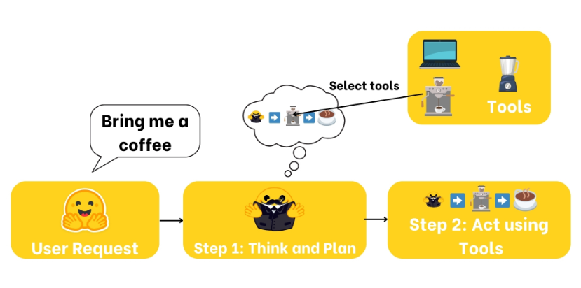
LLM vs. AI Agent
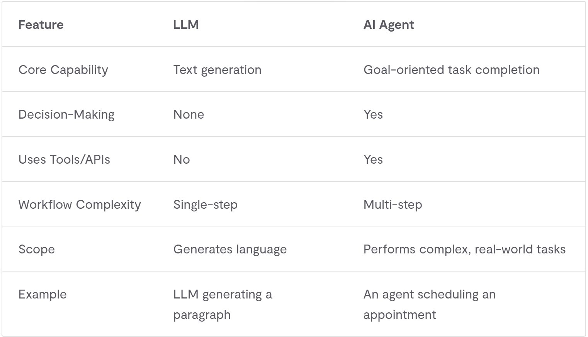
Elements of an AI Agent
- Perception
- It’s the ability to gather information from its environment.
- Decision-making
- This is the agent’s “brain.” Based on its perception (the information gathered) and its programmed goals, the agent decides what to do next.
- The agent can plan ahead (“think”)
Elements of an AI Agent
- Action
- Once a decision is made, the agent needs to act upon it.
- Send message to user, call an API, run a workflow, update DB, etc.
- Happens through definition of tools or function calling
- Memory
- Agents often need to remember past interactions or learned information to provide context for future decisions.
AI Agent

Prompt (User Message)
- The prompt or the user message is the input to the AI agent
- This is the request to the agent
- It does not have to be a human
- It can be other systems and even other agents
System message
- System messages (also called System Prompts) define how the model should behave.
- This is where you can get the agent to talk like a pirate – or something more useful
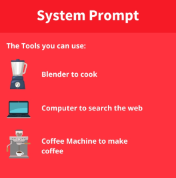
The brain (AI models)
- This is where the “thinking” happens.
- The AI model handles reasoning and planning.
- It decides which Actions to take based on the situation.
- The brain of the agent is the used LLM
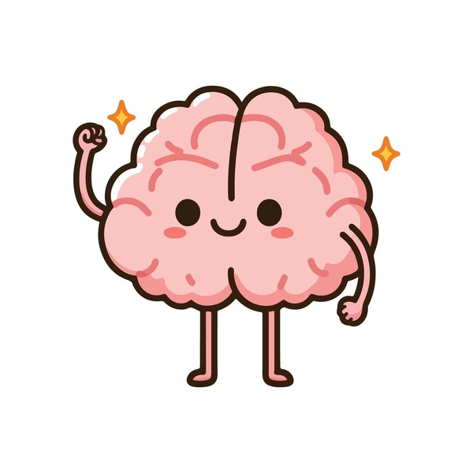
Thought-Action-Observation Cycle
- The Core Components
- Agents work in a continuous cycle of: thinking (Thought) → acting (Act) and observing (Observe)
- Thought: The LLM part of the Agent decides what the next step should be.
- Action: The agent takes an action, by calling the tools with the associated arguments.
- Observation: The model reflects on the response from the tool.
- Agents work in a continuous cycle of: thinking (Thought) → acting (Act) and observing (Observe)
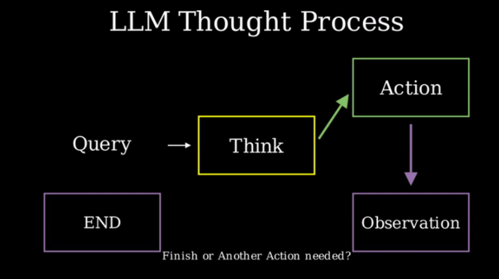
The Body (Capabilities and Tools)
- This part represents everything the Agent is equipped to do.
- The scope of possible actions depends on what the agent has been equipped with.
- For example, because humans lack wings, they can’t perform the “fly” Action, but they can execute Actions like “walk”, “run” ,“jump”, “grab”, and so on.
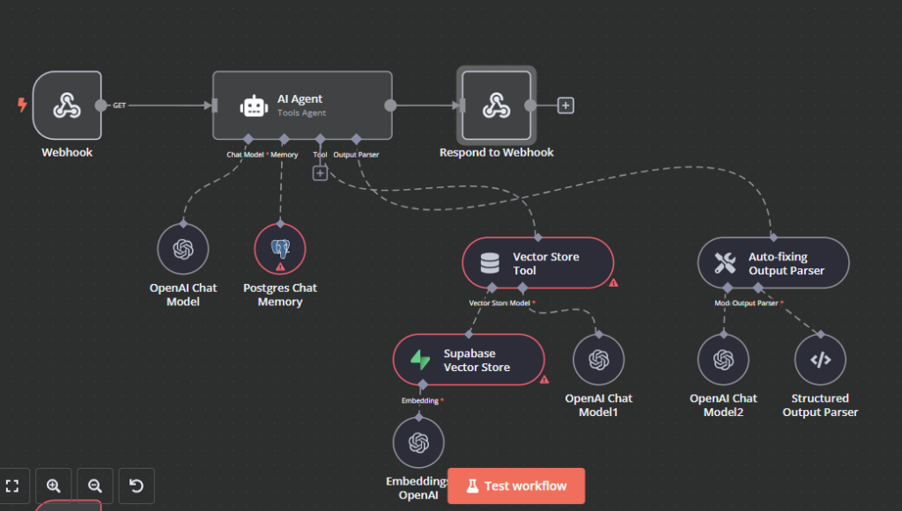
Tools
- A Tool is a function given to the LLM.
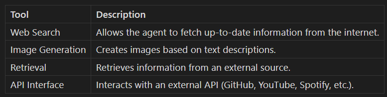
Tools should…
- A good tool should be something that complements the power of an LLM .
- For instance, if you need to perform arithmetic, giving a calculator tool to your LLM will provide better results than relying on the native capabilities of the model.
- LLMs predict the completion of a prompt based on their training data , which means that their internal knowledge only includes events prior to their training. Therefore, if your agent needs up-to-date data you must provide it through some tool.
- A Tool should contain:
- A textual description of what the function does .
- A Callable (something to perform an action).
- Arguments with typings.
- (Optional) Outputs with typings.
Tools to the agent
- For this to work, we must be very precise and accurate about:
- What the tool does
- What exact inputs it expects
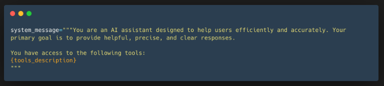
Context engineering
- Prompt engineering focuses on the wording of one instruction.
- Context engineering focuses on everything the model sees when it makes its next decision.
- Context can include:
- System and user messages
- Conversation history and memory
- Retrieved documents and data
- Available tools and previous tool results
- The goal is to provide the right information at the right time — not simply as much context as possible.
Harnessing agents
- An agent harness is the surrounding system that makes an agent useful and reliable.
- It manages:
- The agent loop and context
- Tools, permissions, and guardrails
- Memory, state, and human approval
- Validation, retries, and logging
- An n8n workflow can act as a harness around an AI agent.
Guardrails
- Guardrails are checks and constraints around an agent’s input, actions, and output.
- They can:
- Sanitize text by removing personal data or secret keys
- Reject, retry, or route an unsafe result to a human
- Example: when an agent writes a wiki page, every paragraph must contain an internal wiki link.
- n8n has a Guardrails node for validating and sanitizing text.
Calculator tool
- Tool Name: calculator,
- Description: Multiply two integers.,
- Arguments: a: int, b: int,
- Outputs: int
Agents vs (LLM) models
Agents can find their own strategy or path for solving a task
Models are “fixed”…
10 minutes to talk about the difference between Agents and LLMs - and find questions to ask about agents
- Start “solo” for 2-3 minute and use the rest of the time with the person sitting next to you
When NOT to use Agents
- Use a deterministic solution if the workflow is well-defined and predictable
- Fixed rules, no decision-making needed
- Example: Form validation, data formatting, calculations
- Use a simple LLM if you just need generation or classification without reasoning
- One-shot prediction tasks
- Example: Sentiment analysis, text summarization
- Agents are best for:
- Complex problems requiring reasoning
- Multiple tool interactions
- Uncertain or dynamic workflows
- Tasks requiring adaptation
Prompt Examples
System Prompt:
You are a helpful customer support assistant.
You are professional but friendly.
You always try to solve problems first
before escalating to a human.
Keep responses concise.User Prompt:
I've been trying to log in to my account
for the past hour but keep getting an
error message: "Invalid credentials".
I'm sure my password is correct.
What should I do?Exercise: Agent Personalities
Create 3 agents that answer the SAME user question but with different personalities:
Create agents in n8n and test with the same input:
- Agent 1: Pirate - Speaks like a pirate, uses nautical language
- Agent 2: Tutor - Empathetic, asks clarifying questions, supportive
- Agent 3: Technical Expert - Formal, detailed, uses jargon, very precise
Test question:
- “I want to learn to code”
Observe
- How does the system prompt change the response?
- Which personality is most helpful for your use case?
- What makes an effective system prompt?
Exercise: use of tools
Build one agent with a calculator tool. Ask it three questions:
- One that needs calculation
- one that does not, and one
- Ambiguous question.
Observe when it chooses the tool, what arguments it sends, and how it uses the result.
Spectrum of agents
- Agents exist on a continuous spectrum of increasing agency
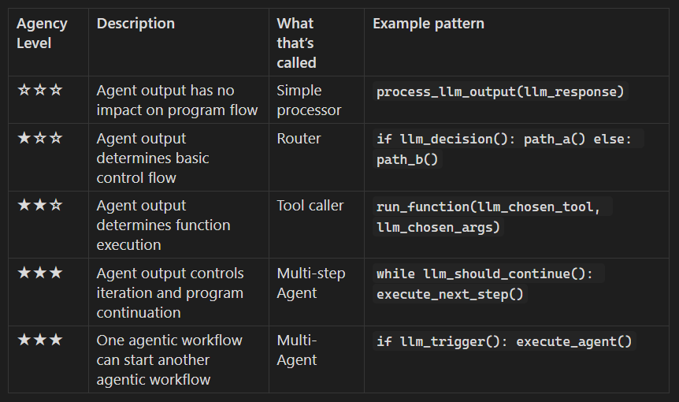
Architecture – sequential agents
- Chain the AI agents
- One agent’s output feeds into the next, creating a linear workflow
- Parallel agents execute multiple tasks simultaneously
- Serial execution is suitable for predictable, multi-step processes
- Parallel execution is better for complex problems requiring simultaneous effort and faster overall completion, enabling more efficient resource use and breaking down large tasks.
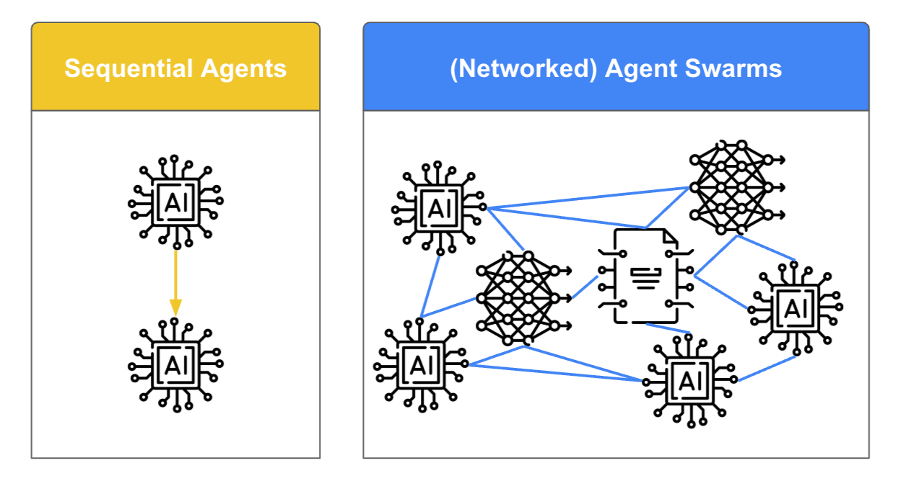
Multi-agent systems
A multi-agent system consists of multiple specialized agents working together under the coordination of an orchestrator agent.
Agents can work sequentially, in parallel, or through handoffs.
This approach distributes complex work among agents with distinct roles.
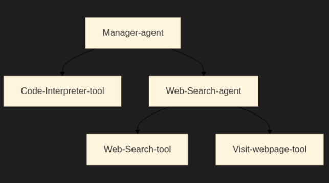
Multi-agent coding example
- Planner: breaks a feature request into smaller tasks
- Implementer: edits the code and runs the relevant commands
- Reviewer/tester: checks the changes against the requirements
- The orchestrator passes the relevant context and results between agents.
- A human remains responsible for approving important changes.
How to create AI agents
- Code from scratch
- Use frameworks
- LangChain, LlamaIndex, Semantic Kernel, or Autogen
- Requires coding
- Platforms such as n8n
- Visual node based – low entry barrier
- “no-code”, but still technical to setup
n8n agenter
- Demo
AI agent
- Generates a plan and executes it
- Can use external tools
- Tools can be added
- Can be instructed through system and user prompts
- Probably the one you will use most
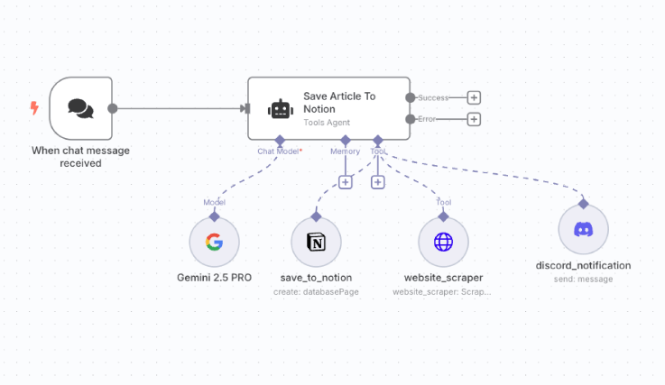
Demo - AI agenten
- User prompts
- System prompt
- Insert data into prompts
- Add LLM
- Memory
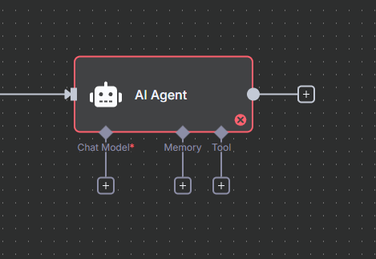
Agent tutorial
https://docs.n8n.io/advanced-ai/intro-tutorial/
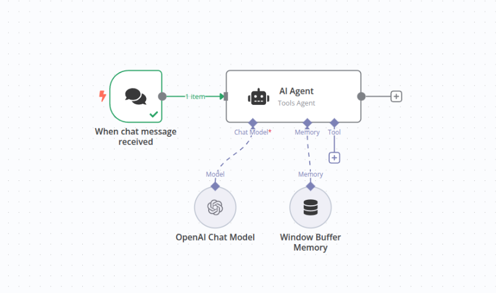
Exercise - “Newsletter”
Find information – transformer - send
ETL
ETL stands for Extract, Transform, Load and is a core data integration process where data is pulled from various sources, cleaned and converted into a usable format, and then stored in a target system, such as a data warehouse, for analysis and business intelligence.
We use the same principle to get data ready for our agents
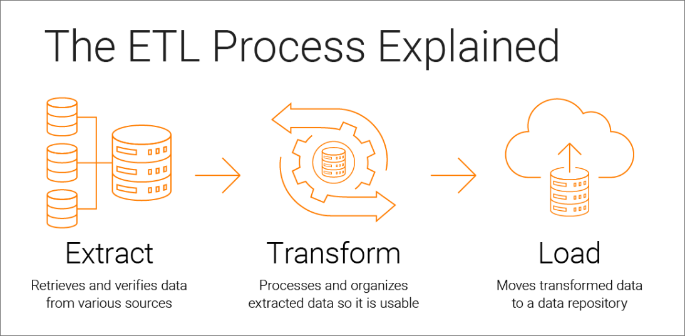
Exercise II - create your own newsletter
- Setup a trigger
- Find info from various sources
- RSS feeds, scrape home pages , search youtube videos ( use transcription), e-mails, reddit, …
- Start with something simple and get it to work
- Setup one or more AI Agents to write your newsletter
- Send the newsletter to yourself (email, chat, Google docs, etc.)
Architecture

Baseline solution v. 1.0
- Extract data
- Use one or more “sources”, reddit, rss
- Agent
- Formats data
- Send newsletter, WhatsApp, Telegram, whatever…
Human in the loop. v. 2.0
- Data
- Use different “sources”, may still be of the same type
- Merge data from different sources
- Human in the loop
- Send newsletter to “human” for a check
- Human feedback, the agenten is using in the “next loop”/revision
More data and selected information - v. 3.0
- Data
- Several and different types of data sources
- Scrape a home page
- Agents
- Agents selects information based on criteria you still for
- Keeps track of what information has been selected - too much / too little
- Send information in different formats (email, chat, Google docs, etc.)
- Handling of rejected mails, etc.
Next session…
- What are LLMs ?
- AI history
- (more) Introduction to Ollama